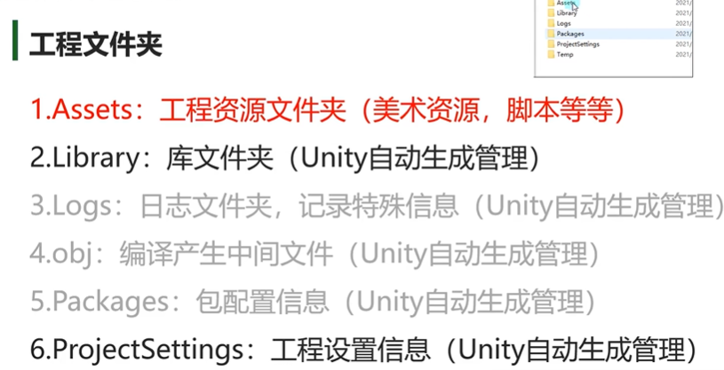
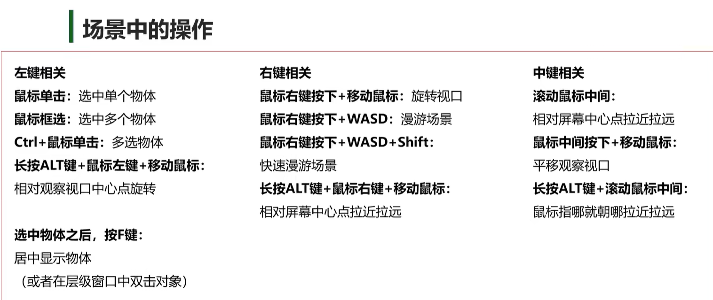
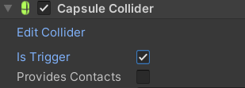

前情提要：博主自愿被抓去做(玩)游戏，组内高手云集(真的吗)，令博主焦虑不安，坐在电脑前狂敲一千多行笔记，于是有了这篇文章
一天c#铺垫后的正文
PROBLEMS:
这一段代码的逻辑让我再想想
1 | AsyncOperation operation; |
新建文件夹！


脚本
创建规则
- 不要在vs中创建脚本
- 可以放在assets文件夹下的任何位置(建议同一文件下)
- 类名和文件名必须一致，不然不能挂载（反射机制通过文件名找type
- 不要用中文命名
- 不用管命名空间
- 创建的脚本默认继承MonoBehavior
生命周期函数
unity底层已经帮我们做好了死循环，我们只需要用unity的生命周期函数来执行游戏逻辑
脚本对象依附的gameobj对象从出生到消亡整个周期中会通过反射自动调用的一些特殊函数
访问修饰符一般是private和protected，因为不需要自己调用，unity自己帮助我们调用生命周期支持继承多态1
2
3
4
5
6
7
8
9
10
11
12
13
14
15
16
17
18
19
20
21
22
23
24
25
26
27
28
29
30
31
32
33
34public class Test : MonoBehavior{
//对象出生
private void Awake(){
//出生时调用，一个对象只会调用一次->脚本对象
//类似构造函数
Debug.Log("xxx");//没有继承mb时可以这样
Debug.DrawLine(new Vector3(1,0,0),new Vector3(1,1,0),Color.blue);
Debug.DrawLine(Vector3.zero,Vector3.up,Color.red);
print("");//继承了mb后可以用
}
private void OnEnable(){
//依附的gameobj每次激活时调用
}
private void start(){
//比awake晚，第一次帧更新时调用,只调用一次
}
private void FixedUpdate(){
//物理更新，每一帧都更新，（和游戏帧有区别
}
private void Update(){
//主要用于游戏核心逻辑的函数
}
private void LateUpdate(){
//一般用来处理摄像机位置更新相关内容
//update和lateupdate之间unity做了一些处理 处理我们动画相关的更新
}
private void onDisable(){
//每次失活时调用
}
private void OnDestroy(){
//销毁时调用(被移除时)
}
//对象死亡
}Inspector窗口可编辑的变量
private和protected无法显示编辑
加上强制序列化特性[SerializeFeild]则可以被显示
public可以显示编辑
加上[HideInspector]则不会显示[System.Serializeable]让自定义类可以被访问
字典怎样都不能被访问
辅助特性
[Header("分组说明")]为成员分组[Tooltip("说明内容")]为变量添加说明，悬停注释[Space()]让字段出现间隔[Range(最大值,最小值)]修饰数值的滑条范围[Multiline(4)]多行显示字符串[TextArea(3,4)]最少3行，最多4行[ContextMenuItem("显示按钮名","方法名")]为变量添加快捷方法[ContextMenu("测试函数")]为方法添加特性能在inspector中执行
运行中改变的信息不会保存
MonoBehavior
基类MonoBehavior
- 脚本只有继承了mb类才能挂载在gameobj上
- 继承了mb类的脚本不能new，只能挂，因此写构造函数毫无意义
- 继承了mb类的脚本可以在一个对象挂多个(如果没有DisallowMultipleComponent特性)
- 继承了mb的类可以再次被继承
重要成员
1
2
3
4
5
6
7
8
9
10
11
12
13
14
15
16print(gameObject);//获取依附的gameobj
//相当于this.gameObject
//这是mb里提供的成员属性
print(this.transform.position);
//获取依附gameobj的位置信息
//this同样可以省略
transform.eulerAngles;
transform.lossyScale;
//
this.enabled = true;
this.enabled = false;
//获取脚本是否激活
public Lesson3 otherLisson3;
//要首先在unity里把别的脚本拖过来才不为空
print(otherLesson3.gameObject.name);
//获取别的脚本对象 依附的gmobj信息重要方法
1
2
3
4
5
6
7
8
9
10
11
12
13
14
15
16
17
18
19
20
21
22
23
24
25
26
27
28
29
30
31Lesson3_Test t = this.GetComponet("Lesson3_Test") as Lesson3_Test;//获取失败默认返回空
print(t);
//根据脚本名获取
t = this.GetComponent(typeof(Lesson3_Test))as Lesson3_Test;
//根据type获取
t = this.GetComponent<Lesoon3_Test>();
//根据泛型获取
//用最多
//只要能获取脚本呢就能得到所有的信息
//得到自己挂载的多个脚本
Lesson3[] array = this.GetComponents<Lesson3>();
print(array.length);
//得到子对象挂载的脚本（它默认也会找自己身上是否挂载该脚本）
t = this.GetComponentInChildren<Lesson3_Test>(true);
//函数有一个参数 默认不传是false 意思就是 如果子对象失活是不会去找这个对象上是否有某个脚本的
//如果传true 如果失活也会找
//得到父对象挂载的脚本
t = this.GetComponentInParent<Lesson3_Test>();
//没有参数 因为父类失活子类一定失活
//尝试获取脚本
//提供了一个更加安全的 获取单个脚本的方法 如果得到了会返回true
Lesson_Test lt;
if(this.TryGetComponent<Lesson_Test>(out lt)){
//逻辑处理
}GameObject
成员变量
1 | //名字,可赋值改变 |
静态方法
1 | //创建自带几何体 |
成员方法
1 | //创建空物体 |
Time
1 |
|
Transform
Vector3
Vector3主要是用来表示三维坐标系中的一个点或者一个向量
（本质上是一个结构体）1
2
3
4
5
6Vector3 v = new Vector3();
v.x=10;
v.y=10;
v.z=10;
Vector3 v = new Vector3(10,10);//只传xy，z默认是0
//不new xyz默认都是0 （因为是结构体 本质是值
基本运算+ - *Vector3.zero 000Vector3.right 100Vector3.left -100Vector3.forward 001 z轴朝向为面朝向Vector3.back 00-1Vector3.up 010Vector3.down 0-10
计算两个点之间的距离的方法Vector3.Distance
位移
1 | this.transform.position; |
角度
1 | this.transform.eulerAngles; |
缩放&看向
1 | this.transform.lossyScale |
父子关系
1 | this.transform.parent.name |
坐标转换
1 | //world2local |
Applicaation
1 | //游戏数据文件夹路径 |
Input
输入相关一定是写在update中的
屏幕坐标原点是在屏幕的做下角
屏幕是2d的
查找默认轴输入：Edit->ProjectSettings->InputManager1
2
3
4
5
6
7
8
9
10
11
12
13
14
15
16
17
18
19
20
21
22
23
24
25
26
27
28
29
30
31
32
33
34
35
36
37
38
39
40
41
42
43
44
print(Input.mousePosition);//鼠标位置
//检测鼠标输入 0左键 1右键 2中间
if(Input.GetMouseButtonDown(0)){
print("鼠标某个键被按下了");
}
if(Input.GetMouseButtonUp(0)){
print("鼠标某个键抬起了");
}
if(Input.GetMouseButton(1)){
print("鼠标按下抬起都要");//按住按键不放时会一直判断
}
Input.mouseScrollDelta;//中键滚动 -1往下滚 0没有滚 1往上滚
Input.GetKeyDown(KeyCode.W)//w键按下
Input.GetKeyDown("q")//只能传小写字符串，推荐写上面的 有对应api
Input.GetKeyUp(KeyCode.W)//w键按下
//unity提供了更方便的方法控制对象位移和旋转
//将wasd的输入和鼠标移动转换成-1~1的数
Input.GetAxis("");
//Edit->ProjectSettings->InputManager
//Horizontal->ad水平
//Vertical->ws上下
//Mouse x
//Mouse y
//可以设置下面这个成员变量方便计算
float x = Input.GetAxis("Horizontal");
Input.GetAxisRaw("");//返回值只有-1 0 1 没有中间值 默认getaxis是渐变的
Input.anyKey//长按
Input.anyKeyDown//有一个键按下 e.g.修改游戏按键
//手柄输入
Input.GetJoystickNames();//得到连接手柄的所有按钮名字
Input.GetButtonDown("Jump");//虚拟按键
Input.GetButtonUp("Jump");
//移动设备触摸
Input.touchCount();
//是否多点触控
//陀螺仪（重力感应
//旋转速度
Screen
静态属性
1 | //当前屏幕分辨率 |
静态方法
1 | //设置分辨率 |
Scene
选中场景->file->BuildSettings->把场景拖过来
场景类 Scene
场景管理类 SceneManager1
2
3
4
5
6
7
8
9
10
11
12
13
14
15
16
17
18
19
20
21//创建新场景
Scene newscene = SceneManager.CreateScene("newscene");
//个数
SceneManager.sceneCount;
//场景跳转
//第二个参数选择加载方式
SceneManager.LoadScene(1);//编号或名字
SceneManager.LoadScene(1,LoadSceneMode.Addictive);//叠加加载
//卸载场景
SceneManager.UnLoadSceneAsync(newscene);
//获取当前场景
Scene scene = SceneManager.GetActiveScene();
//是否加载
scene.isLoaded;
//路径
scene.path;
//索引
scene.buildIndex;
//得到物体
scene.GetRootGameObject();//返回的是数组
异步加载
似乎就是多线程的另一种说法
（这异步明显比多线程听起来帅多了1
2
3
4
5
6
7
8
9
10
11
12
13
14
15
16
17
18
19
20
21
22AsyncOperation operation;
void Start(){
StartCoroutine(loadScene());
}
//协程方法用来异步加载场景
IEnumerator loadScene(){
operation = SceneManager.LoadSceneAsync(1);
//加载完场景不要自动跳转
operation.allowSceneActivation = false;
yield return operation;
}//当执行到 yield return operation 时，协程会暂停并将控制权返回给Unity的协程管理器。此时，Unity会继续处理其他游戏逻辑、渲染等任务。
//一旦异步加载操作完成（即场景加载完成），协程会从 yield return operation 位置恢复执行。如果在 yield return 之后还有代码，协程会继续执行后续的代码。
float timer = 0;
void Update(){
//0~0.9
print(operation.progress);//进度条
timer += Time.deltaTime;
//如果到达5秒跳转
if(timer>5){
operation.allowSceneActivation = true;//手动跳转
}
}
Camera
Clear Flags
- skybox天空盒(默认) 3D
- Solid Color颜色填充 2D
- Depth only只画该层，背景透明 多个摄像头叠加渲染
- Dont Clear不移除，覆盖渲染 基本不会用(好艺术)
Cuiling Mask
选择性渲染部分层级 可以指定渲染相应层级
Projection
- 透视模式
- FOV Axis 视线角 轴
- Field of view 视口大小
- Physical Camera 可以模拟真实世界摄像头，你没有见过的传新功能
- 正交摄像机
Clipping Planes
裁剪平面距离
改变白线视线范围 决定能够渲染的区域
Depth
渲染顺序上的深度
越大的后面渲染 后面渲染的会覆盖前面渲染的
如果两个摄像机渲染同一个方块，并在clearflags里选中depthonly
就会看见两个方块，且深度低的图层在下面
e.g.渲染ui
Target Tesxture
可以吧摄像机画面渲染到一张图上 e.g.制作小地图
在Project右键创建Render Texture,把摄像机拖过来
Occlusion Cuiling
是否启用剔除遮挡
其它
Viewport Rect 可以双屏
Reclering path
Allow HDR 高动态范围渲染
Allow MSAA 动态分辨率呈现
Allow Dynamic Resolution
Target Display
静态成员&方法
1 |
|
光源组件
Window->Asset Store->search:Standard
阴影消耗性能
实时灯光消耗性能↓
烘焙->把当前灯光的数据保存下来
音频组件
Audio Listener(camera有这个成员)
obj上添加Audio Source这个组件1
2
3
4
5
6
7
8
9
10
11
12
13
14
15
16
17
18
19
20
21
22
23
24
25
26
27
28
29
30
31
32
33//音乐要拖进来绑定
public AudioClip music;
public AudioClip se;
//播放器组件
private AudioSource player;
void Start(){
player = GetComponent<AudioSource>();
//设定播放的音频片段
player.clip = music;
//循环
player.loop;
//音量
player.volume = 0.5f;
//播放
player.Play();
}
void Update(){
if(Input.GetKeyDown(KeyCode.Space)){
if(player.isPlaying){
player.Pause();
}
else{
player.Unpause();//如果是play则就重头播放
}
}
//左键播放声音
if(Input.GetMouseButtonDown(0)){
player.PlayOneShot(se);//只负责播放一声就可以了
}
}
视频组件
渲染器纹理作用：将播放的视频与渲染器绑定，方便之后修改所有挂载有该渲染器纹理的对象播放的视屏。
渲染器纹理
添加组件Video Player
把视频拖拽到视频剪辑上
渲染模式->渲染器纹理 把纹理拖过来
现在视频就会播放在纹理上
把纹理拖到平面上
也可以吧纹理拖拽到这里^ ^↓
hierarchy->右键->ui->原始图像1
2
3
4
5
6
7
8
9
10
11using UnityEngine.Video;
private VideoPlayer player;
void Start(){
player = GetComponent<VideoPlayer>();
}
void Update(){
if(Input.GetKeyDown(KeyCode.Space)){
}
}
控制器
1可以从商城里拿现成的
2untiy给的角色控制器 ◁
3自己通过物理引擎做
添加组件Character Controller
这是一个第三人称视角固定的控制器↓1
2
3
4
5
6
7
8
9
10
11
12
13
14
15
16
17
18
19
20
21
22
23
24private CharacterController player;
void Start(){
player = GetComponent<CharacterController>();
}
void Update(){
//水平轴
float horizontal = Input.GetAxis("Horizontal");
//垂直轴
float vertical = Input.GetAxis("Vertical");
//创建一个方向向量
Vector3 dir = new Vector3(horizontal,0,vertical);
// Debug.DrawRay(transform.position,dir,Color.red);
//朝该方向移动
player.SimpleMove(dir*2);
if(dir!=Vector3.zero){
//面向向量
transform.ratation = Quaternior.LookRotation(dir);
animator.SetBool("IsRun",true);
}else{
animator.SetBool("IsRun",false);
}
}1
2
3
4
5private Rigidbody rBody;
if (Input.GetKeyDown(KeyCode.Space))
{
rBody.AddForce(Vector3.up * 200);
}
物理
添加组件rigidbody
碰撞Collide
如何做出爆炸效果：
爆炸的obj1
2
3
4
5
6
7
8
9
10
11
12
13
14
15
16
17
18
19
20
21
22
23
24
25
26public class cubetest : MonoBehaviour
{
// Start is called before the first frame update
//创建一个爆炸预设体
public GameObject Prefab;
void Start()
{
}
// Update is called once per frame
void Update()
{
}
//监听发生碰撞
private void OnCollisionEnter(Collision collision)
{
//创建一个爆炸物体
Instantiate(Prefab, transform.position, Quaternion.identity);
//销毁自身
Destroy(gameObject);
}
}
作为爆炸效果的obj1
2
3
4
5
6
7
8
9
10
11
12
13
14
15float timer = 0;
void Start()
{
}
// Update is called once per frame
void Update()
{
timer += Time.deltaTime;
if (timer > 1)
{
Destroy(gameObject);
}
}
封装降低耦合 不要把所有业务逻辑写在一个脚本上
触发
和爆炸一样，需要两个物体都有collide组件，并且其中一个有刚体组件
把这个勾上就是触发了

勾选上以后不会碰撞而是直接穿过去了
->令meshrenderer这个组件失活就看不见啦
1 | private void OnTriggerEnter(Collider other) |
内置的事件方法
区别:
collide拿到的 collision是发生碰撞的物体 需要collision.collider才能拿到它的碰撞器
而trigger的collider就是进入触发的碰撞器
常见触发处理：
creat empty->circle collider
物理关节
Hinge Joint
Anchor->轴的位置
Axis->轴的方向
Motor->门自动动Spring Joint
弹簧连接Fixed Joint
电焊焊起来了
射线检测
1 | void Update() |
线段渲染器
LineRenderer1
2
3
4
5
6LineRenderer lineRenderer = GetComponent<LineRenderer>();
lineRenderer.positionCount = 3;
lineRenderer.SetPosition(0, Vector3.zero);
lineRenderer.SetPosition(0, Vector3.one);
lineRenderer.SetPosition(0, Vector3.down);
lineRenderer.endWidth = 2;
动画
ctrl+6快捷键
制作方式和ae pr区别不大1
2
3
4
5if (Input.GetKeyDown(KeyCode.F))
{
//触发pickup参数
GetComponent<Animator>().SetTrigger("pickup");
}
TimeLine
project->create->timeline
hierachy->create empty用于播放timeline
选中这个director 在timeline界面加animation track
把挂载animator的物体拖拽过来 再把animator拖拽到轨道上
完全就是aepr！
Activation Track
可以隐藏东西
比如可以隐藏主摄像头让他在播放动画时不起作用
并设置动画摄像头的持续时间
触发
1 | public class trigger : MonoBehaviour |
导航
给平面添加ai->导航Nav Mesh Agent
代理类型->Open Agent Settings…
添加humanroid
选择物体humanroid类型1
2
3
4
5
6
7
8
9
10
11
12
13
14
15
16
17
18
19
20
21
22
23
24
25public class Player : MonoBehaviour
{
private NavMeshAgent agent;
void Start()
{
//获取代理组件
agent = GetComponent<NavMeshAgent>();
}
void Update()
{
if (Input.GetMouseButtonDown(0))
{
Ray ray = Camera.main.ScreenPointToRay(Input.mousePosition);
RaycastHit hit;
if (Physics.Raycast(ray, out hit))
{
Vector3 point = hit.point;
//该位置为导航目标点
agent.SetDestination(point);
}
}
}
}
动态障碍物
Nav Mesh Obstacle
切割->动态烘焙
网格链接
选中导航
对象->Generate OffMeshLinksOffMeshLink
拖拽起始和结束
定点传送！
区域
设置权重
UI
free gui
ui->cavas
image
Button
1 | public void ButtonClick() |
然后在想要指定的按钮下把装载buttonclick的方法拖过来
Panel
把控件分类到面板上方便改动
本质是图像
设置完记得取消显示
常用组件
Mask
就是图层蒙版，以父物体为蒙版
Content Size Filtter
文本宽高根据文本内容修改
Vertical/Horizontal/Grid Layout Group
类似css的margin之类的设置
一个对话系统制作
1 | using System.Collections; |
1 | using System.Collections; |
主要思想就是将数据储存在trigger里，在触发时把数据传给触发者（player
将主要的业务逻辑放在player身上得到manager上
思考/脑洞记录
地形分一个包
gobj其他东西，包括灯光
player单独一个包
player的子物体head是camera Standard asset第一人称控制器
我们这个游戏应该不用跳吧(….)1
2
3
4
5
6
7
8
9
10
11
12
13
14
15
16
17
18
19
20
21
22
23
24
25
26
27
28
29
30
31
32
33
34
35
36
37
38
39
40
41
42
43
44
45
46
47
48public class cubetest : MonoBehaviour
{
private NavMeshAgent agent;
private Rigidbody rBody;
private AudioSource footPlayer;
private bool isGround;
void Start()
{
//获取代理组件
rBody = GetComponent<Rigidbody>();
footPlayer = GetComponent<AudioSource>();
}
void Update()
{
if(Input.GetKeyDown(KeyCode.Space)&&isGround == true)
{
rBody.AddForce(Vector3.up * 200);
}
float horizontal = Input.GetAxis("Horizontal");
float vertical = Input.GetAxis("Vertical");
if (horizontal != 0 || vertical != 0)
{
if (footPlayer.isPlaying == false)
{
footPlayer.Play();
}
}
else
{
footPlayer.Stop();
}
}
private void OnCollisionEnter(Collision collision)
{
if(collision.collider.tag == "Ground")
{
isGround = true;
}
}
private void OnCollisionExit(Collision collision)
{
isGround=false;
}
}
通过tag来做出不同分支
手持物体要作为camera的子物体
像思考这种需要更新却又不是更新时立马触发的应该怎么样写才是最优雅的呢？
我能想象的就是设置的触发器仅仅把数据传输到player身上而不进行业务逻辑触发
等到按c时去调用身上储存的数据
感觉应该把thinking数据从menulist中分离
这样下去感觉player身上的component会越来越多 到时候又怎么管理呢？